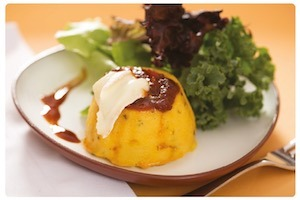
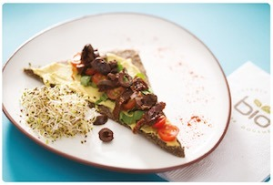
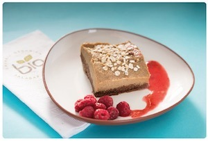

Tiras de Mussarela
Tiras de mozzarella assadas.

Tiras de mozzarella assadas.
Jalapeños recheados com camarão e queijo cheddar com bacon.
220 gr. de torresmos de lula frita com alioli.
Com Cheddar e bacon.
Torta de Asas de frango e frito com molho de churrasco..
Croquetes feitos de cogumelos dissecados.
Camarões grelhados com nozes, tomate cereja e manjericão.
Com mangá e melancia grelhada
Nachos refogados com feijão preto, chouriço vermelho e molho barbecue.
Pão caseiro de campo, muzzarela e queijo brie.
Chouriço de sangue, batata, chutney de maçã e creme de endro.
Pão doce com manga, abacaxi, gengibre, pimenta e pipoca.

Ribeye com patos andinos, salada de rúcula, provolone e molho crioulo.
Clássica, com frango ou camarão.
Com bife, creme ou molho de rosa.
Camarões refogados, trabalhados, cebolinha com molho de laranja, vinagre e azeite.
Pesca Dia Chinatown com cebola roxa, alho, pimenta, aipo, coentro, gengibre, campo de milho, batata-doce e leite de tigre.
Dia de pesca grelhado com azeitonas, alho e alcaparras, acompanhado de vegetais chop suey.
Com risoto verde de espargos e banha assada.
600 g de carne com chimichurri t-osso, patins andinas e banhadas em conserva.
Peito de frango defumado, recheado com cogumelos e duxelle de cebola.
Chutney com cenoura e batatas doces são de vidro com molho teriyaki.
Recheado com abóbora assada e queijo brie, perfumado com manteiga de ervas e sumô de toranja.

Nosso pudim clássico com doce de leite e creme.
Frutas frescas da estação.
Com frutas frescas em filetes.
(Sem descrição adicional).
Mousse de manga, chocolate, moca e frutas vermelhas.
(Sem descrição adicional).